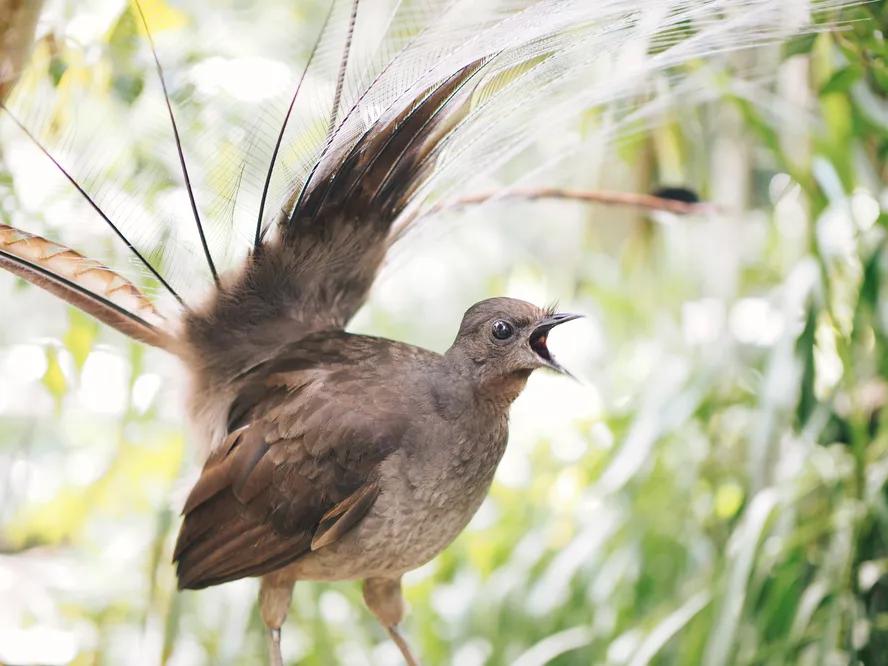

Os pássaros lira estão entre os maiores passeriformes do mundo, parecendo e agindo muito mais como faisões marrons do que como seus parentes pássaros canoros. Essa ilusão é quebrada quando os machos abrem a boca para cantar. Os pássaros lira estão entre os melhores imitadores do mundo, às vezes incorporando sons feitos por humanos (sons de motosserras, uma lata de tinta spray sendo sacudida, cliques de câmeras e, é claro, toques de celulares) em seus cantos epicamente longos. Seu nome deriva da forma das espetaculares plumas da cauda do macho que se exibe.
Clique aqui para ler mais sobre o Passáro Lira.